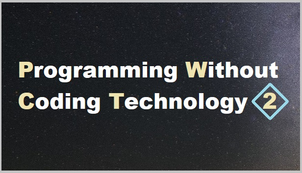

Introduction
Welcome to the PWCT visual programming language!
Usage
PWCT is a visual programming language that focuses on Productivity and Ease-of-Use!
If you want to learn programming, create applications/systems or get some new ideas about visual programming in the practice then you are in the right place. The goal of this project is to present programming to every computer users, whether they are beginners or professionals. Beginners means that the tools of programming must be accessible – must be easy. So I decided to take coding out of programming. And presenting programming to professional developers requires a tool that is productive and unlimited and can be extended.
The domain of the problem is called “Visual Programming Languages.” There are many projects in this domain, but most of these languages are domain-specific languages that are used in education, But with respect to general-purpose visual programming languages, there are few of them. PWCT don’t use the Drag-and-Drop method. PWCT provide a new method based on Automatic Steps Tree Generation and Update in response to interaction with components that provide to the user simple data entry forms. The idea behind this new method is to mix between programming using Diagrammatic approach and programming using Form-based approach where the integration between the two approaches are done seamlessly through an Automatic Visual Representation Generation process. This is just the basic idea and many other ideas are developed around this concept to get a practical general purpose visual programming language for real world tasks.
Quotes about PWCT
History
PWCT 1.0 is released on October 18, 2008
PWCT 1.1 is released on February 20, 2009
PWCT 1.2 is released on May 4, 2009
PWCT 1.3 is released on May 30, 2009
PWCT 1.4 is released on August 28, 2009
PWCT 1.5 is released on March 27, 2010
PWCT 1.6 is released on May 16, 2010
PWCT 1.7 is released on September 15, 2010
PWCT 1.8 is released on October 18, 2011 (Latest update : 22 April 2013)
PWCT 1.9 is released on May 7, 2013 (Latest update : 4 February 2024)
PWCT 2.0 is released on March 1, 2023 (Latest update : 14 September 2024)
Features
The PWCT language comes with the next features
Tip
The language is ready for production!
Visual Programming Language
Program Visualization
Support the Ring programming language
Many Samples and Applications
Complete Documentation.
License
The PWCT Visual Programming Language
Version 2.0
Commercial Software
Copyright (c) PWCT Software
The above copyright notice and this permission notice shall be included in all copies or substantial portions of the Software.
THE SOFTWARE IS PROVIDED “AS IS”, WITHOUT WARRANTY OF ANY KIND, EXPRESS OR IMPLIED, INCLUDING BUT NOT LIMITED TO THE WARRANTIES OF MERCHANTABILITY, FITNESS FOR A PARTICULAR PURPOSE AND NONINFRINGEMENT. IN NO EVENT SHALL THE AUTHORS OR COPYRIGHT HOLDERS BE LIABLE FOR ANY CLAIM, DAMAGES OR OTHER LIABILITY, WHETHER IN AN ACTION OF CONTRACT, TORT OR OTHERWISE, ARISING FROM, OUT OF OR IN CONNECTION WITH THE SOFTWARE OR THE USE OR OTHER DEALINGS IN THE SOFTWARE.